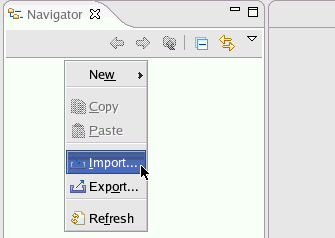
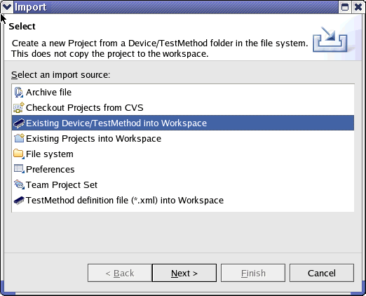
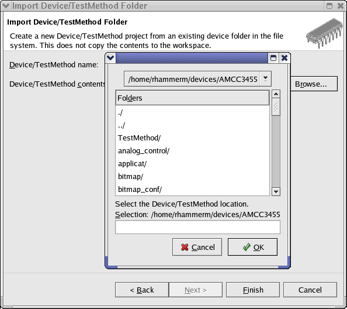

Importing a device into your workspace
With this task you import an existing device. If you want to create a new device, see Creating a new device.
Importing a device means that you create a link to your device directory. It does not copy the contents of your device directory to your workspace.
To import a device:
- Highlight the navigator and click the right mouse button. Select
Import... .

- In the Import window click Existing Device/TestMethod into
Workspace.

- Select the device directory.

- Click OK.Note When you select the device directory, you have to enter the device directory by double-clicking, otherwise you will get the error message /<path>/<directory> does not have .technology file.